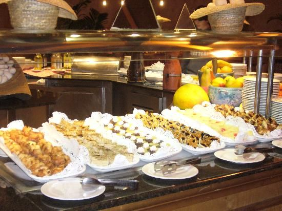
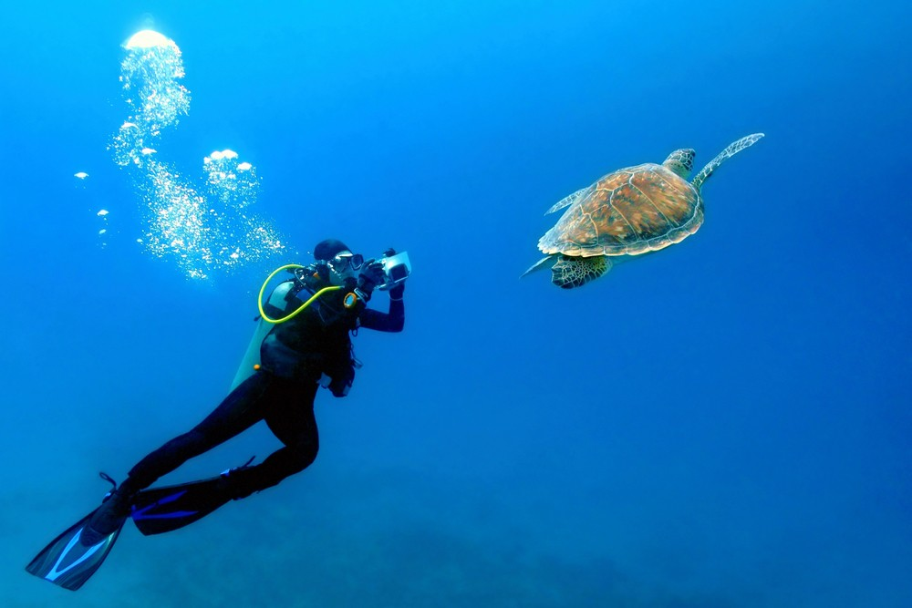

Le voyage que j'avais aimes le plus etait mon voyage au cuba. et il y a plusieur raison pourquoi je les aimes,
Numero un et le solie
numero deux le nourriture,
et numero trois l'ocean.
J'aimes comment il avait toujour du solie quand j'aitais la il avait pas une journée qu'il avait pas du solie et qui faisait froid. C'estait pas come au Canada qui fait toujour froid.
Le nourriture quand j'aites au cuba etait fantastique, quand je me suis aller j'aitais jeunne donc, quand j'avais vue le bufet du hotel pour les dinner j'aitais très contant acause de tout les desser.

qu'est j'aimes le plus de l'ocean quand j'étais au Cuba est nagés avec les tortues et les poisions.
